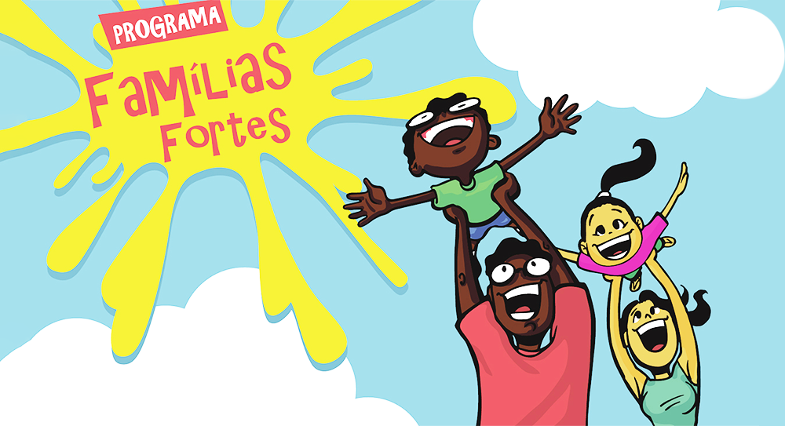

Cronometro Guiado
Roteiro do Encontro
Acompanhe o encontro com tempo visivel e troca manual entre as etapas.

Atividade atual
1a Parte - Vamos nos conhecer
8 minutos
Tempo restante
08
:
00
Pronto para comecar.